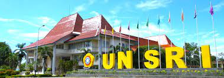

Universitas Sriwijaya (UNSRI)
Universitas Sriwijaya (UNSRI) adalah sebuah Perguruan Tinggi Negeri di Sumatera Selatan, Indonesia. Universitas Sriwijaya memiliki sepuluh fakultas dengan dua lokasi kampus yaitu di Bukit Besar, Kota Palembang dan di Indralaya, Kabupaten Ogan Ilir.
Pada tahun 2021, Unsri mendapatkan akreditasi Unggul yang diberikan oleh Badan Akreditasi Nasional Perguruan Tinggi (BAN-PT).
UNSRI juga dinobatkan sebagai kampus terluas di Indonesia sekaligus di Asia Tenggara dengan luas 712 hektare.
Sejarah
Ide untuk memiliki sebuah perguruan tinggi di Sumatera Selatan telah ada sejak awal tahun 1950-an, yang dicetuskan dalam suatu kesempatan resepsi perayaan hari Kemerdekaan tanggal 17 Agustus 1952. Diprakarsai oleh beberapa pemuka masyarakat, menjelma menjadi kesepakatan untuk membentuk "Panitia Fakulteit Sumatera Selatan". Menjelang akhir Agustus 1952, dengan berbagai pertimbangan, ditetapkan bahwa yang pertama akan didirikan adalah Fakultas Ekonomi. Untuk itu dibentuklah "Panitia Fakultet Ekonomi Sumatera Selatan" yang dikelola oleh suatu yayasan yang didirikan pada tanggal 1 April 1953 dengan nama "Yayasan Perguruan Tinggi Sjakhjakirti".
Pembukaan Fakultet Ekonomi secara resmi di bawah Yayasan Perguruan Tinggi Sjakhjakirti ini dilakukan pada tanggal 31 Oktober 1953 dalam suatu acara yang dihadiri oleh Mr. Hadi, Sekretaris Jenderal Kementerian Pendidikan Pengajaran dan Kebudayaan (PPK), Drg. M. Isa (Gubernur Sumatera Selatan), Letjen. TNI (Purn.) Bambang Utoyo (Panglima TT II Sriwijaya) dan Ali Gathmyr (Ketua DPRD Sumatera Selatan).
Upaya melengkapi perguruan tinggi di Sumsel dilanjutkan oleh Yayasan Perguruan Tinggi Sjakhjakirti dengan membentuk Panitia Penyelenggaraan Fakultas Hukum. Pada tanggal 1 November 1957, bertepatan dengan perayaan Dies Natalis IV Fakultas Ekonomi, diresmikanlah fakultas tersebut dengan nama 'Fakultas Hukum dan Pengetahuan Masyarakat".
Pengembangan kemudian dilanjutkan dengan bantuan Penguasa Militer Teritorial II Sriwijaya yang memberikan bantuan keuangan unuk mendirikan gedung permanen Yayasan Perguruan Tinggi Sjakhjakirti di Bukit Besar (kini Kampus Unsri Bukit Besar). Upacara peletakan batu pertamanya dilakukan pada tanggal 31 Oktober 1957.
Upaya selanjutnya adalah penegerian perguruan tinggi yang sudah ada tersebut. Dengan perjuangan gigih tokoh masyarakat Sumsel ketika itu, antara lain Kolonel Harun Sohar (Panglima selaku Ketua Paperda TT II/ Sriwijaya) dan H.A. Bastari (Gubernur), hambatan yang masih ada untuk berdirinya universitas negeri di Palembang dapat diatasi. Delegasi yang dikirim ke Jakarta bulan Desember 1959 menemui Menteri PPK (Mr. Mohammad Yamin) berhasil memperoleh jaminan kesediaan pemerintah untuk mengambil alih Perguruan Tinggi Sjakhjakirti menjadi suatu universitas negeri. Dengan Peraturan Pemerintah No. 42 Tahun 1960 tanggal 29 Oktober 1960 (Lembaran Negara Tahun 1960 No. 135) akhirnya berdirilah Universitas Sriwijaya yang peresmiannya dilakukan pada tanggal 3 November 1960 dalam upacara penandatanganan piagam pendirian oleh Presiden Soekarno dengan disaksikan oleh Menteri PPK (Mr. Priyono) dan beberapa Duta Besar negara sahabat. Sebagai Presiden Universitas yang pertama diangkat, Drg. M. Isa diangkat dengan Keputusan Presiden No. 696/M tahun 1960 tanggal 29 Okober 1960.
Untuk memenuhi tuntutan perkembangan, Unsri kemudian merencanakan penambahan kampus di luar Bukit Besar yang sudah ada, dengan membebaskan tanah seluas 712 hektare, di Indralaya, Kabupaten Ogan Komering Ilir (Sekarang Ogan Ilir), pada tahun 1982. Pembangunan kampus baru ini dimulai pada tahun 1983 dengan bantuan dana Asian Development Bank (ADB), yang secara fisik baru dimulai pada tahun 1989 dan berakhir pada tanggal 31 Desember 1993. Gubernur Sumatera Selatan H. Ramli Hasan Basri memberikan kuliah perdana menandai awal kegiatan akademik di kampus baru Indralaya ini pada tanggal 1 September 1993. Pemanfaatan sepenuhnya fasilitas di Kampus Indralaya dilaksanakan dengan Keputusan Rektor pada bulan Januari 1995 dimana ditetapkan bahwa terhitung sejak tanggal 1 Februari 1995 semua kegiatan administrasi dan sebagian besar kegiatan akademik diselenggarakan di Kampus Indralaya. Peresmian Kampus Unsri Indralaya yang sesungguhnya baru dilaksanakan pada tanggal 6 Maret 1997 oleh Presiden Soeharto.